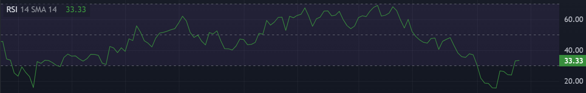
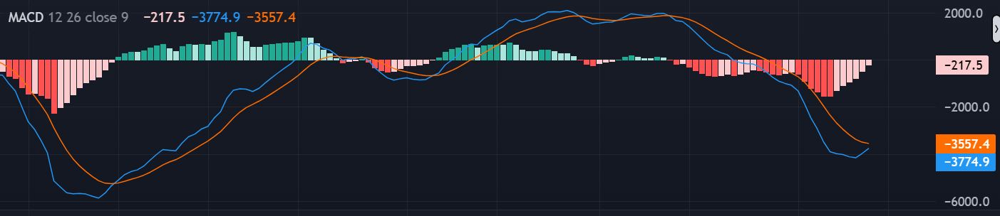
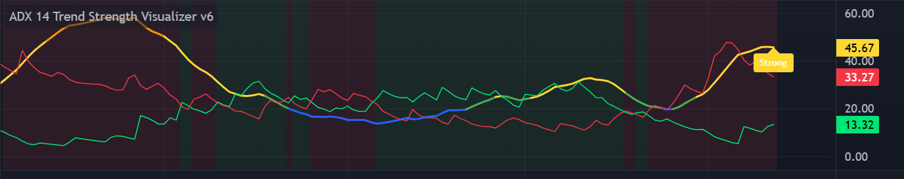
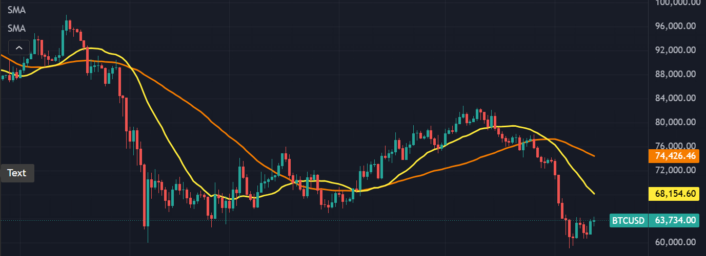
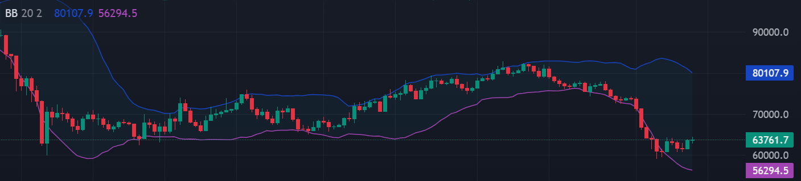
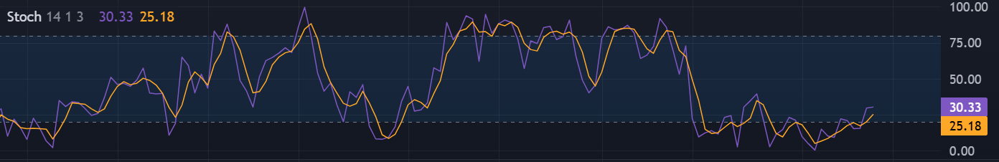

Guida agli indicatori tecnici usati nei report di analisi.
Ogni scheda spiega cosa misura l'indicatore, come interpretarlo
e come viene usato nei nostri report.
RSI(14)
Relative Strength Index
L'RSI è un oscillatore che misura la velocità e l'ampiezza dei movimenti di prezzo
nelle ultime 14 candele. Quando le candele sono state prevalentemente rosse (in discesa), l'RSI scende;
quando sono state verdi (in salita), sale.

RSI su BTC/USDT (TradingView)
Come si legge
RSI < 20
Ipervenduto ESTREMO. Evento raro per BTC daily. Negli ultimi 5 anni è successo solo a marzo 2020 (Covid) e novembre 2022 (FTX); in entrambi i casi il prezzo ha fatto un rimbalzo del 50-100% nei 6 mesi successivi. Non è un segnale automatico di acquisto, ma un indicatore di probabilità statistica.
RSI 20-30
Ipervenduto. Il mercato è depresso, possibile inversione ma serve conferma da altri indicatori.
RSI 30-70
Zona neutra. Il mercato non è né surriscaldato né depresso.
RSI > 70
Ipercomprato. Possibile zona di euforia, possibile correzione in arrivo.
Divergenza
Se il prezzo fa un nuovo minimo ma l'RSI fa un minimo più alto, il ribasso sta perdendo forza (divergenza rialzista). È uno dei segnali più affidabili.
Nel nostro report usiamo il metodo Wilder Smoothed — lo stesso di TradingView — così i valori coincidono con quelli che vedi sui tuoi grafici.
MACD(12,26,9)
Moving Average Convergence Divergence
Il MACD confronta due medie mobili esponenziali del prezzo (una veloce a 12 periodi e una lenta a 26)
e misura se si stanno avvicinando o allontanando. La Signal line (9 periodi) serve da trigger;
l'istogramma mostra la distanza tra MACD e Signal.

MACD su BTC/USDT (TradingView)
Come si legge
MACD sopra la Signal line
Il momentum sta migliorando. Attenzione: non significa trend rialzista — MACD e Signal possono essere entrambi profondamente negativi (es. MACD -3.853 / Signal -3.588: sopra la Signal ma ancora in territorio bearish). È un miglioramento del momentum, non un'inversione confermata.
MACD sopra la Signal line E sopra lo zero
Trend rialzista CONFERMATO. Solo a questo punto si può parlare di inversione.
MACD sotto la Signal line
Il momentum rallenta nella direzione corrente. Se anche sotto zero, il trend è ribassista.
Istogramma in aumento
La distanza tra MACD e Signal cresce: il momentum nella direzione corrente si rafforza.
Istogramma in calo
La distanza si riduce: il momentum si indebolisce — possibile inversione in arrivo.
Incrocio MACD sopra Signal + sopra zero
Inversione rialzista.
Incrocio MACD sotto Signal + sotto zero
Inversione ribassista.
Nota importante. La posizione rispetto allo zero conta quanto quella rispetto alla Signal. Nei report scriviamo «MACD -3.853 / Signal -3.588 — BEARISH, istogramma in miglioramento»: non scriviamo mai «BUY» quando il MACD è sotto zero, anche se sopra la Signal. Nel Triple Screen il MACD decide il trend principale (Screen 1): se dice ribasso, non si opera in long, punto.
ADX(14) + DI
Average Directional Index
L'ADX misura la forza del trend, non la direzione. Per sapere chi sta vincendo
servono +DI (compratori) e -DI (venditori).

ADX + DI su BTC/USDT (TradingView)
Come si legge l'ADX
ADX < 20
Trend debole o assente. Mercato laterale, in range. Gli oscillatori (RSI, Stochastic) funzionano meglio qui.
ADX 20-40
Trend moderato. Il mercato ha una direzione ma senza eccessi.
ADX > 40
Trend FORTE. Il mercato si muove deciso: conviene seguire il trend, non cercare inversioni.
ADX in calo da >40
Segnale importante: il trend perde forza anche se il prezzo non si è ancora girato (divergenza).
Come si leggono +DI e -DI
+DI > -DI
I compratori prevalgono. Trend rialzista.
-DI > +DI
I venditori prevalgono. Trend ribassista.
Differenza ampia
Es. +DI:8 vs -DI:41 — un lato domina nettamente.
Differenza che si riduce
Il trend sta cambiando.
SMA(20/50)
Simple Moving Average
Le medie mobili semplici mostrano il prezzo medio degli ultimi 20 e 50 giorni.
Sono il modo più diretto per capire se il mercato è in trend rialzista o ribassista.

SMA 20/50 su BTC/USDT (TradingView)
Come si legge
Prezzo sopra SMA20
Trend rialzista di breve termine (ultime 3 settimane).
Prezzo sotto SMA20
Trend ribassista di breve termine.
SMA20 sopra SMA50 (Golden Cross)
Incrocio al rialzo: segnale di trend positivo di medio termine.
SMA20 sotto SMA50 (Death Cross)
Incrocio al ribasso: segnale di trend negativo di medio termine.
SMA20 come livello dinamico
Funge da resistenza in un trend ribassista (il prezzo spesso si ferma lì sui rimbalzi) e da supporto in un trend rialzista.
Nel report. «Prezzo SOTTO SMA20 (-8%)» significa che il prezzo è l'8% sotto la media degli ultimi 20 giorni — distanza significativa.
Bollinger Bands(20,2)
Le Bollinger sono bande di volatilità calcolate come SMA20 ± 2 deviazioni standard.
Si allargano quando il mercato è volatile, si restringono quando si calma.

Bollinger Bands su BTC/USDT (TradingView)
Come si legge
Bande che si allargano
La volatilità aumenta. Possibile breakout in una direzione o nell'altra.
Bande che si restringono
Il mercato consolida. Di solito precede un movimento significativo.
Prezzo che tocca la banda inferiore
Statisticamente ipervenduto. Attenzione: non è un segnale di acquisto automatico — in trend forti il prezzo può cavalcare la banda per giorni.
Prezzo che tocca la banda superiore
Ipercomprato.
%B
Posizione del prezzo dentro le bande (0% = inferiore, 100% = superiore, 50% = centro). Un %B che sale da valori bassi indica che il prezzo si allontana dai minimi.
Errore comune da evitare. Le Bollinger non sono livelli di supporto e resistenza: sono misurazioni statistiche di volatilità.
Stochastic(14,3)
%K / %D
Lo Stochastic confronta il prezzo di chiusura con il range
(massimo-minimo) degli ultimi 14 periodi. Dice se il mercato ha chiuso vicino ai massimi o ai minimi.

Stochastic %K/%D su BTC/USDT (TradingView)
Come si legge
%K (linea veloce) sotto 20
Ipervenduto. Il prezzo ha chiuso vicino ai minimi del range.
%K sopra 80
Ipercomprato. Il prezzo ha chiuso vicino ai massimi.
%K che sale da sotto 20
Uscita dall'ipervenduto. Possibile inversione rialzista.
%K che scende da sopra 80
Uscita dall'ipercomprato. Possibile inversione ribassista.
%D (linea lenta, media 3 periodi di %K)
Conferma il segnale di %K. Quando %K incrocia %D, il segnale si rafforza.
OFAMP — TimesFM 2.5
OFAMP è la nostra applicazione basata su TimesFM 2.5, modello di previsione AI
sviluppato da Google (200 milioni di parametri). Gira localmente sul Jetson Orin Nano e analizza i dati storici
di Yahoo Finance per produrre una previsione a 30 giorni.
Cosa produce
Target
Il valore mediano previsto dal modello per i prossimi 30 giorni.
Banda Min/Max
Intervallo di confidenza (circa 80% di probabilità che il prezzo cada in questa fascia).
Non eventi improvvisi
TimesFM non prevede shock (guerre, IPO, notizie improvvise). È un modello statistico, non una sfera di cristallo.
Come interpretarlo
Target sopra prezzo attuale
Il modello vede spazio di crescita.
Target sotto prezzo attuale
Il modello vede possibile correzione.
Prezzo ai bordi della banda
Il modello assegna bassa probabilità che il prezzo vada oltre.
Caratteristica importante. TimesFM è conservativo: in fase di trend forte tende a sottostimare il movimento. Funziona meglio in mercati laterali o di consolidamento.
Triple Screen
Alexander Elder
Non è un indicatore ma un metodo di analisi che combina 3 timeframe per filtrare
i segnali falsi. È il cuore della nostra metodologia.
I tre schermi (come usati nei report)
Screen 1 — Trend (DAILY)
Usa il MACD per determinare la direzione principale. Decide se possiamo solo comprare, solo vendere, o stare fuori.
Screen 2 — Oscillatore (4H/1H)
Usa l'RSI per trovare il momento giusto per entrare, ma solo nella direzione consentita da Screen 1.
Screen 3 — Esecuzione (4H)
Candele, volumi, pattern. Dove piazzare lo stop loss.
La regola più importante. Mai operare contro Screen 1. Se il MACD dice ribasso (Screen 1 = SELL), non si aprono posizioni long: si aspetta che il trend si giri. Periodo. Quando nel report vedi «Triple Screen: ATTESA», Screen 1 e Screen 2 sono in conflitto (uno dice ribasso, l'altro ipervenduto): si aspetta che si allineino.
Pattern di Capitulation
La capitulation è un pattern di fine trend ribassista che si verifica quando la paura
raggiunge il massimo e i venditori esausti lasciano spazio ai compratori.
Elementi del pattern
RSI < 15 su daily per 2-3 giorni
La pressione di vendita è estrema e prolungata.
Prezzo sotto la banda inferiore di Bollinger
Il mercato è statisticamente fuori dai normali range di volatilità.
Volume esploso
Spesso il doppio o il triplo della media giornaliera: segno di una resa dei venditori.
ADX > 40 con prezzo che smette di scendere
Trend fortissimo ma senza nuovi minimi (divergenza).
Rimbalzo successivo
Il prezzo recupera dal minimo.
Cosa significa. Storicamente la capitulation di BTC (marzo 2020 Covid, novembre 2022 FTX) ha segnato il fondo del mercato, con rimbalzi del 50-100% nei 6 mesi successivi. Attenzione: non è un segnale di acquisto immediato — il prezzo può restare depresso per giorni o settimane. Si aspetta che il MACD confermi l'inversione.
Ponderazione dei Fattori
Nel verdetto finale del report, ogni fattore riceve un peso percentuale in base alla
sua rilevanza nel momento attuale. Questo evita che un singolo indicatore domini la conclusione.
Fattore
Peso
Perché
Trend
30%
La direzione del mercato è il fattore singolo più importante
Momentum
25%
Misura se il trend sta accelerando o esaurendo
OFAMP
15%
Previsione AI 30gg — utile ma non determinante
Sentiment
15%
Social, news, Telegram, X — dà contesto
Macro
15%
Dollaro, Fed, BCE, geopolitica — rischi esterni
Riflessione. Il verdetto include sempre una riflessione sul conflitto tra fattori (es. «dollaro forte vs flussi istituzionali: chi vince?»). Questa analisi qualitativa completa i numeri.